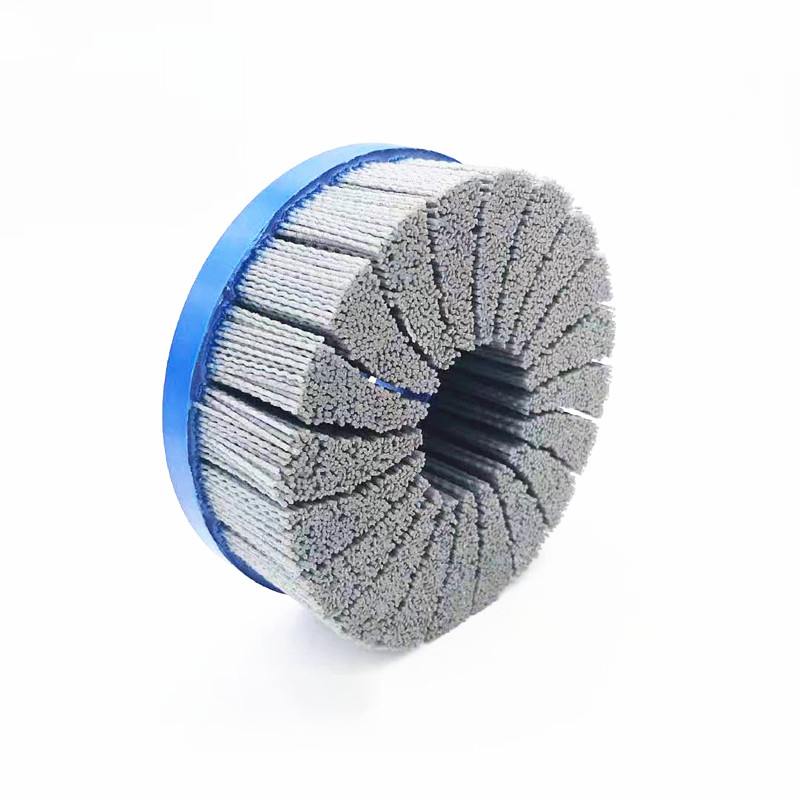

Filament selection
Wire and abrasive nylon behave differently. Select by removal requirement, substrate sensitivity and the next manufacturing step—not by appearance alone.
Home / Custom cup brushes
CUSTOM CUP BRUSHES
Cup brushes bring the contact area around the tool axis. The right build depends on whether the work needs cleaning, blending, light burr removal or a more aggressive mechanical action.
Request a technical review
Wire and abrasive nylon behave differently. Select by removal requirement, substrate sensitivity and the next manufacturing step—not by appearance alone.
Threaded arbor, bore and hub requirements need to match the power tool or machine interface before production approval.
Filament material, grain where applicable, trim and density influence how the brush follows profiles and changes the surface.
TECHNICAL RFQ
For sensitive surfaces, tell us what must be preserved as well as what needs to be removed. Representative-part testing remains important before a production specification is fixed.
| Job to perform | Cleaning, blending, light deburring, coating preparation or another defined task |
|---|---|
| Part material | Base material, profile and contamination sensitivity |
| Tool interface | Machine or power tool, thread/bore and operating speed |
| Contact area | Flat face, edges, seams, profiles or restricted access points |
| Finish target | Removal requirement and downstream process such as coating or inspection |
Send the current brush details, photos of the part and tool information for an application-led discussion.